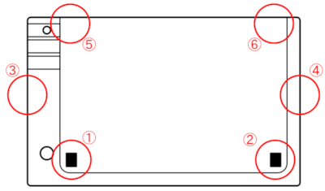
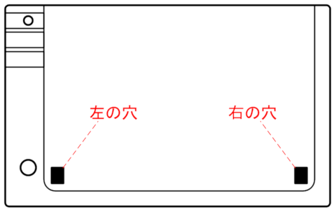
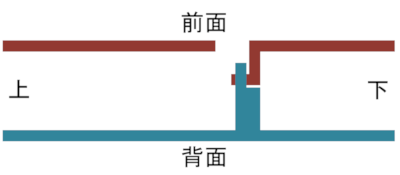
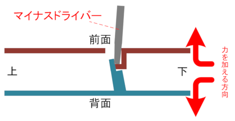

[前]
フック＆ラッチの位置は、カートリッジ正面から見て下図の赤丸の位置にあります。

これを①→②→③→④→⑤⑥の順で外します。

まずは①です。左側の穴に、マイナスの精密ドライバーを挿入し、爪をかけるラッチを軽く内側へ倒すようにします。
穴の中のイメージを下記に示します。カートリッジ正面から見て、穴を通るように垂直にカットしたイメージです。

赤はカートリッジケース前面パーツ、青はカートリッジケース背面パーツになります。
前面パーツ側にフックが、背面パーツ側にラッチが付いており、このラッチにフックが引っかかって固定されています。
穴からマイナスドライバーを差し込み、このラッチを上側へ倒し、ケース前面パーツを背面パーツから離すように力を加えて
左下ラッチを外します。

下記の点に注意してください。
(1) ドライバーでラッチに力をかけすぎないこと。
→ 力をかけすぎるとラッチが折れると思います。
(2) 前面パーツと背面パーツを離すように加える力もかけすぎないこと
→ カートリッジ左右側面部分にもラッチ＆フックがあるので、この時点では完全に外れるところまでできません。
無理に力を加えると、左右側面のラッチや、右側下のラッチを壊してしまいます。
フックが外れて前面パーツと背面パーツの間に少し隙間ができたら、この隙間を維持したまま、右下の穴も同様に外します。
左右が両方外れた時点でも、まだ隙間が少しできているだけの状態になります。
これは、両サイドに③と④のフック＆ラッチがあるためです。
③のフック＆ラッチのところは、①②を外した時点で少し隙間が見えます。ここにマイナスドライバーを挿入して
軽くこじって外します。④も同様。
③④が外れると、一気に開けそうな雰囲気になるのですが、ここで無理に力を入れると⑤⑥が折れてしまうので注意。
ラベルを捨てる覚悟があれば、カートリッジ上側サイドの部分のラベルを剥がしてしまえば、簡単に外れると思います。
私は剥がさずに、カートリッジ前面を少しよじる感じで少しずつずらしていったら外れました。
[次]